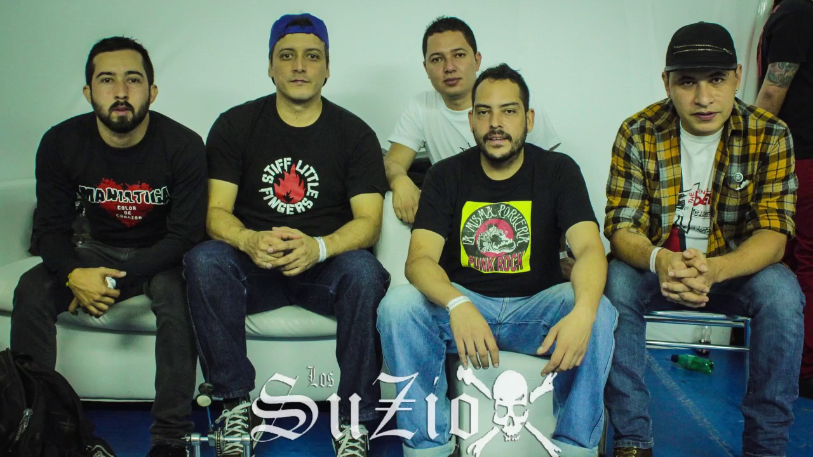

Los Suziox es una banda de Medellín que ya suma casi veinte años de trayectoria (nació en 2003). Se ha posicionado como uno de los grupos más reconocidos a nivel nacional e internacional por su calidad musical, por la extensión de su producción y por convertirse en una banda de culto de los punkeros colombianos.
Los Suziox
Integrantes
- Andrés Ocampo (Voz líder)
- Sundara Mandelbaum (Guitarra)
- Andrés Torres (Batería)
- Camilo Monsalve (Bajo)
- Juan S. Pizarro (Guitarra)
Discografía
| Álbumes | Fecha de publicación |
| Destruya Fácil | 2004 |
| El Fin Justifica Los Medios | 2007 |